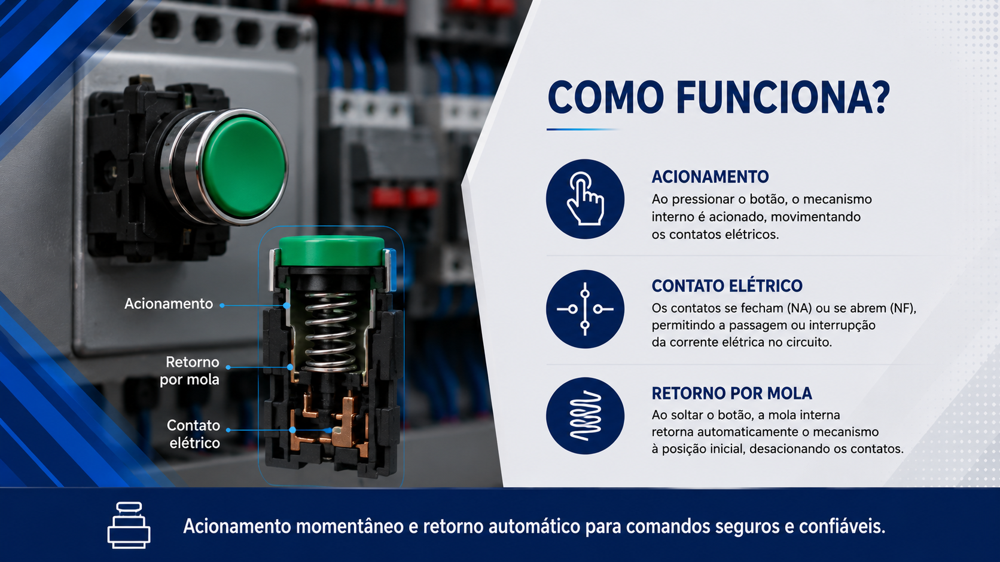
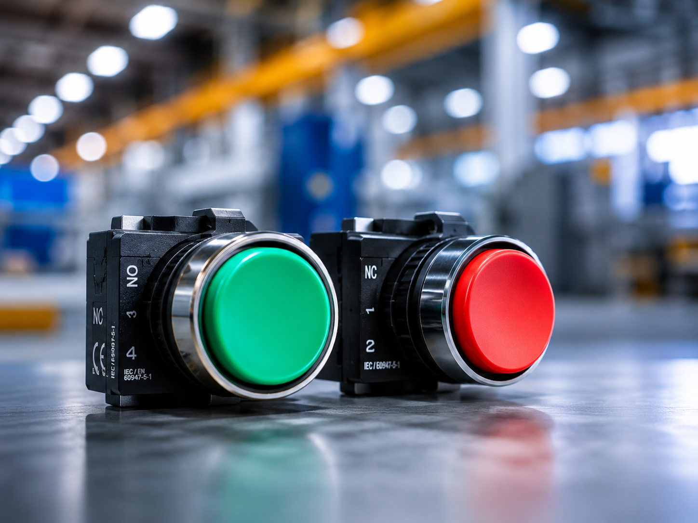

Botão de Pulso
Dispositivo eletromecânico que funciona como um interruptor de alta potência.



Conceito e Aplicação
O botão pulso, também conhecido como botoeira, é um dispositivo de comando utilizado para enviar sinais momentâneos em circuitos elétricos e sistemas de automação industrial. Seu acionamento ocorre apenas enquanto o operador mantém o botão pressionado.
- Comando manual de máquinas e equipamentos;
- Acionamento de partidas e paradas;
- Integração com contatores e relés;
- Aplicações em painéis elétricos industriais.
Informações Complementares

Funcionamento
O botão pulso envia um sinal elétrico temporário quando pressionado, retornando automaticamente à posição inicial após ser liberado.
Saiba Mais
Aplicações
Utilizado em comandos de partida e parada de motores, máquinas industriais, esteiras transportadoras e sistemas automatizados.
Saiba Mais
Vantagens
Oferece operação simples, rápida resposta ao comando e elevada confiabilidade para aplicações industriais.
Saiba MaisEmpresas
As botoeiras são componentes fundamentais nos sistemas de comando e automação industrial. No mercado brasileiro, diversas empresas desenvolvem soluções para acionamento, sinalização e controle de máquinas, oferecendo produtos que atendem aos mais elevados padrões de qualidade, segurança e confiabilidade.
A Schmersal Brasil, a Steck e a Soprano destacam-se pela fabricação e comercialização de botoeiras utilizadas em painéis elétricos, máquinas industriais e sistemas de automação. Seus produtos são amplamente empregados em aplicações que exigem robustez, durabilidade e segurança operacional.
SCHMERSAL BRASIL: Referência mundial em segurança industrial e automação. A empresa oferece uma ampla linha de botoeiras, botões de emergência e dispositivos de comando desenvolvidos para garantir a proteção de operadores e equipamentos em ambientes industriais.
STECK: Empresa brasileira reconhecida por suas soluções em materiais elétricos e automação. Suas botoeiras são utilizadas em painéis de comando e sistemas industriais, destacando-se pela confiabilidade, facilidade de instalação e excelente custo-benefício.
SOPRANO: Tradicional fabricante brasileira de componentes elétricos e soluções para infraestrutura. A linha de botoeiras da Soprano atende aplicações industriais e comerciais, oferecendo resistência, segurança e desempenho para operações de comando e controle..